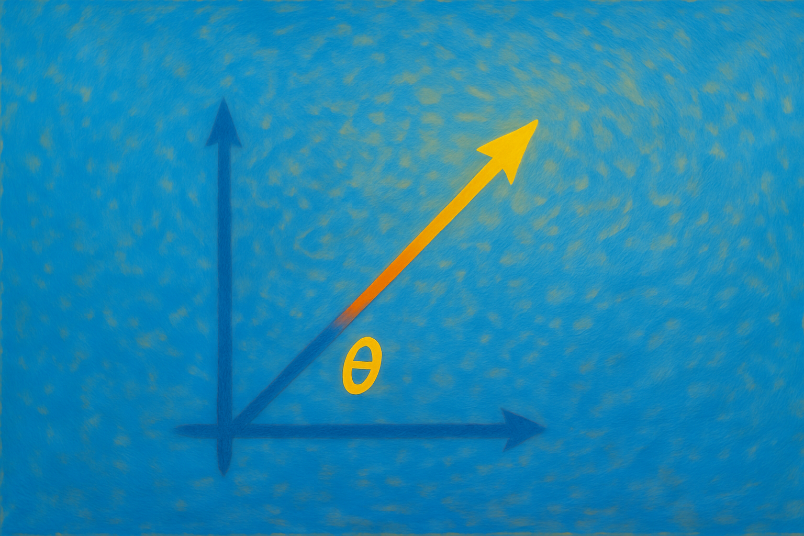
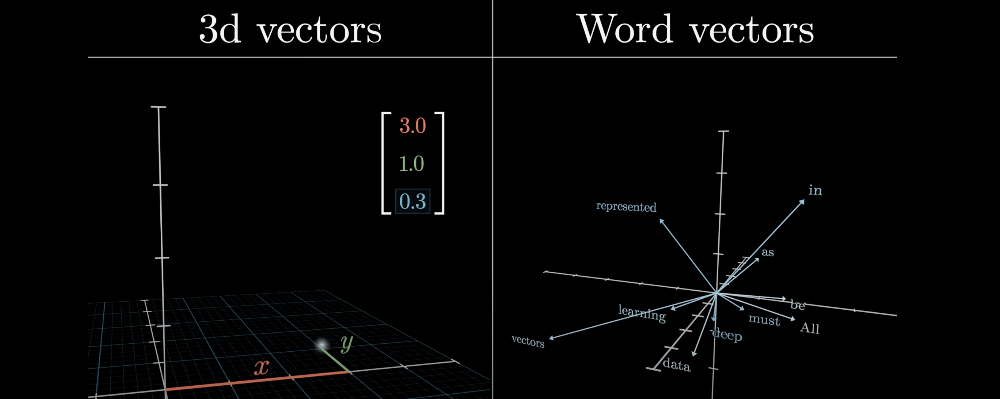

Blog Entries
HNSW and MMR: A Shallow Dive
A closer look at how HNSW's layered graph structure enables fast approximate search, and how Maximal Marginal Relevance (MMR) helps diversify retrieved results.
How Cosine Similarity Can Play Tricks on You
Why my cosine similarity results looked broken at first — and how chunking strategy and embedding model choice turned out to be the real culprits.

RAG at Heart - Understanding Cosine Similarity
How K-Nearest Neighbors compares a question to an answer and the underlying formulas that are behind it all.

RAG with a Knowledgebase
Building a RAG pipeline over a set of academic papers — chunking, embedding with Hugging Face models, and retrieving from an HNSW-backed vectorstore.